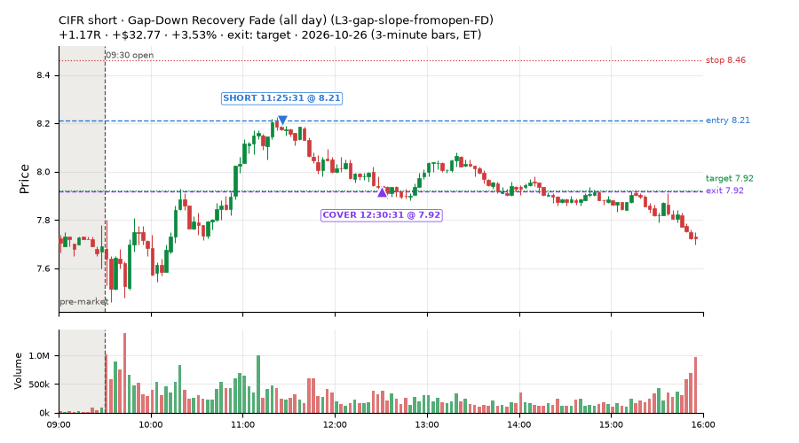
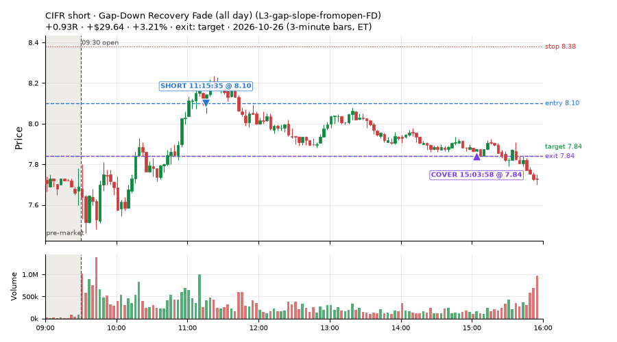
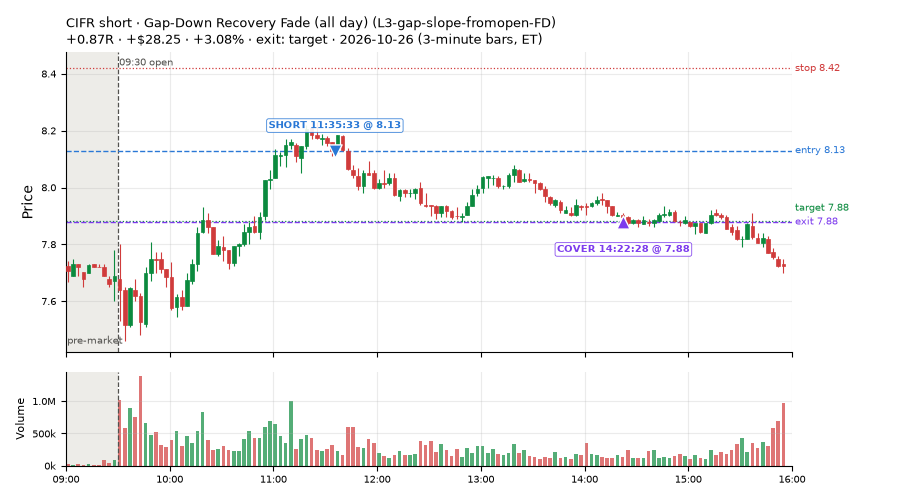
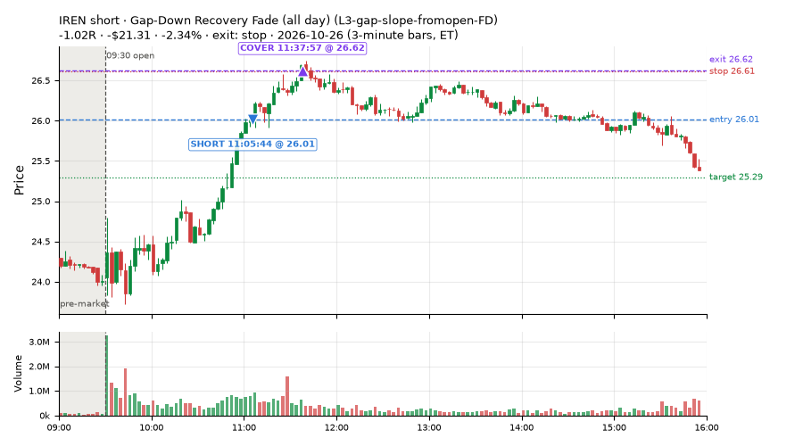
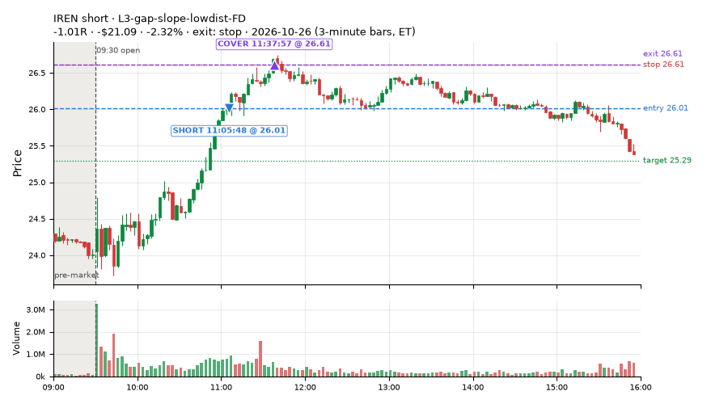
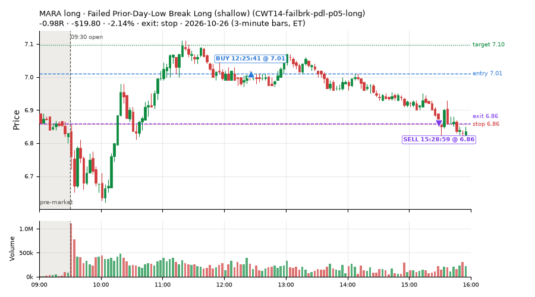
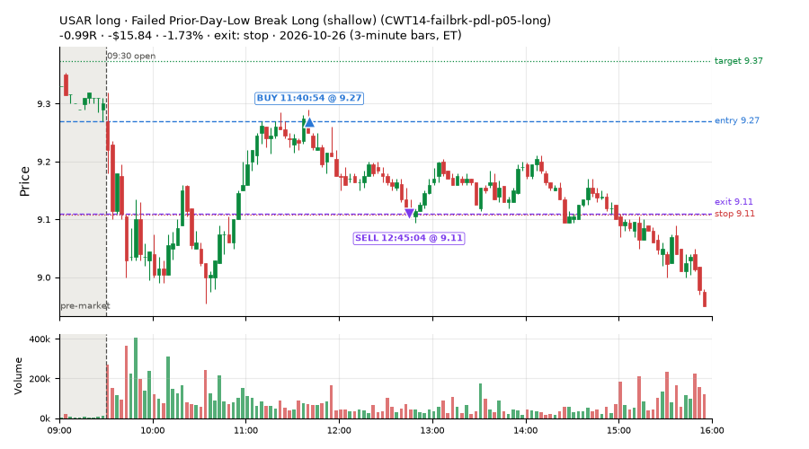
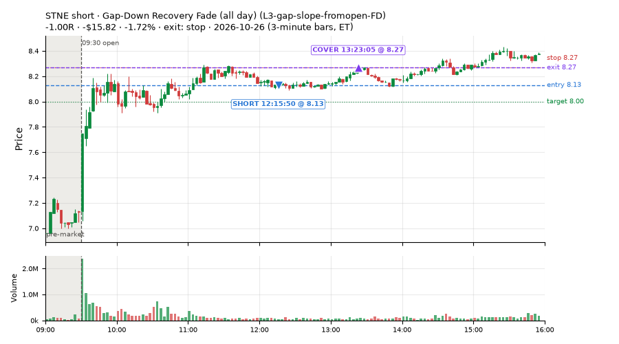

136 trades · win rate 58% · P/L $544.11
PROBATION: no live setup has passed both locked test periods. 10 owner-directed setups added 2026-10-08 (MarcoFlow top 5 + 5 new), untested live. RW6G1 (RW6 + VWAP band guard) added 2026-10-09, probation.

| Symbol | Setup | Side | In | Out | Entry | Exit | Exit reason | % gained | P/L |
|---|---|---|---|---|---|---|---|---|---|
| CIFR | Gap-Down Recovery Fade (all day) (L3-gap-slope-fromopen-FD) | short | 11:25 | 12:30 | 8.21 | 7.92 | target | +3.53% | $32.77 |
| CIFR | Gap-Down Recovery Fade (all day) (L3-gap-slope-fromopen-FD) | short | 11:15 | 15:03 | 8.10 | 7.84 | target | +3.21% | $29.64 |
| CIFR | Gap-Down Recovery Fade (all day) (L3-gap-slope-fromopen-FD) | short | 11:35 | 14:22 | 8.13 | 7.88 | target | +3.08% | $28.25 |
| Symbol | Setup | Side | In | Out | Entry | Exit | Exit reason | % lost | P/L |
|---|---|---|---|---|---|---|---|---|---|
| IREN | L3-gap-slope-fromopen-FD | short | 11:05 | 11:37 | 26.01 | 26.62 | stop | -2.34% | $-21.31 |
| IREN | L3-gap-slope-lowdist-FD | short | 11:05 | 11:37 | 26.01 | 26.61 | stop | -2.32% | $-21.09 |
| MARA | CWT14-failbrk-pdl-p05-long | long | 12:25 | 15:28 | 7.01 | 6.86 | stop | -2.14% | $-19.80 |
| USAR | CWT14-failbrk-pdl-p05-long | long | 11:40 | 12:45 | 9.27 | 9.11 | stop | -1.73% | $-15.84 |
| STNE | L3-gap-slope-fromopen-FD | short | 12:15 | 13:23 | 8.13 | 8.27 | stop | -1.72% | $-15.82 |








Signal to fill: median 1s, 90th percentile 2s (136 trades). Bars close each minute; the order follows the bar close.
Best excursion (MFE): median 0.73R; worst (MAE) median 0.56R. 18% of trades never got +0.25R in our favour; 5 reached +1R and still closed at or below 0.
| Symbol | Setup | Best R | Worst R | Closed R |
|---|---|---|---|---|
| UGP | L3-gap-slope-fromopen-FD | +1.42 | -1.02 | -1.02 |
| NU | L3-gap-slope-fromopen-FD | +1.38 | -0.97 | -0.97 |
| EWZ | L3-gap-slope-fromopen-FD | +1.16 | -1.21 | -1.02 |
| RKLB | CWT12-coil-k6-long | +1.20 | -1.17 | -0.94 |
| EWZ | L3-gap-slope-fromopen-FD | +0.87 | -1.05 | -1.07 |
| Entry time | Trades | Win | Avg R | P/L |
|---|---|---|---|---|
| 10:30-11:30 | 48 | 56% | +0.07 | $239.34 |
| 11:30-13:00 | 46 | 52% | +0.04 | $66.33 |
| 13:00-14:00 | 29 | 79% | +0.36 | $221.23 |
| 14:00-16:00 | 13 | 38% | -0.06 | $17.21 |
| Setup | Trades | Win | Avg R | Adj R (net of SPY) | P/L |
|---|---|---|---|---|---|
| Panic Flush Reversal (3x volume) (CWT05-flush-m05-v3-long) | 2.0 | 0% | -1.02 | -0.94 | $-18.74 |
| Coil Under the High (6 bars) (CWT12-coil-k6-long) | 9.0 | 11% | -0.77 | -0.52 | $-34.91 |
| Failed Prior-Day-Low Break Long (shallow) (CWT14-failbrk-pdl-p05-long) | 24.0 | 42% | -0.33 | -0.20 | $-44.64 |
| Gap-Down Recovery Fade (all day) (L3-gap-slope-fromopen-FD) | 42.0 | 60% | +0.29 | +0.21 | $279.35 |
| L3-gap-slope-lowdist-FD | 10.0 | 70% | +0.32 | +0.27 | $50.55 |
| Early Sellers into a Pop (all day) (MF3-open-flowsell-rsi5hi-FD) | 5.0 | 80% | +0.43 | +0.14 | $22.40 |
| Sellers into Strength (all day) (MF5-flowsell-vwapup-rsi5hi) owner-directed; holdouts once: Sep-Oct -0.001R n264, Apr-Jun -0.010R n1199 | 1.0 | 100% | +1.06 | +0.23 | $3.50 |
| NS1-rsidip-rsi5pop-long-FD | 1.0 | 100% | +0.43 | +0.40 | $5.88 |
| RW4-ns3-adv150-short-FD | 1.0 | 100% | +0.39 | +0.28 | $5.36 |
| RW6G1-ns2-up3-vwap2sd-short-FD | 1.0 | 100% | +0.68 | +0.53 | $7.20 |
| RW7-gapdn-bounce-early-short-FD | 14.0 | 57% | -0.02 | -0.18 | $25.62 |
| ST4-emadn-long-am-t1s05-FD | 1.0 | 100% | +1.64 | +1.66 | $20.71 |
| Afternoon Blow-off Short (exhaustion_short) failed Apr-Jun holdout: -0.020R/trade over 622 trades | 17.0 | 94% | +0.57 | +0.50 | $209.56 |
| exhaustion_short-FD | 4.0 | 50% | +0.24 | +0.08 | $13.80 |
| Index Last-Half-Hour Momentum (intraday_momentum) failed Apr-Jun holdout: -0.091R/trade over 147 trades | 4.0 | 25% | -0.14 | -0.13 | $-1.53 |
Market direction (SPY, beta 1) accounted for $65.38 of today's $544.11; the rest ($478.73) came from the setups themselves. Avg R net of SPY: +0.07 (incl. a hedge leg's cost; report only).
33 setups live today. Today: 305 signals, 136 taken, 55 lost because another setup held the symbol (18%). Since 2026-10-09 (12 sessions): 6629 signals, 2797 taken, 671 lost to other setups (10%). Peak open positions today 72 of 400 slots. Earnings blackout removed 1024 symbols before scanning.
Simulated playing time (not live): 3503 what-if trades of signals not taken, avg -0.20R, 45% winners; of them 518 lost to another setup (avg +0.07R).
Silent: IDX1-qqq100-0955-TQQQ-trail, IDX1-qqq100-0955-TQQQ-hold, IDX2-spy075-0945-3x-trail, IDX3-spy075-0955-3x-trail, IDX5-spy050-0945-3x-trail · Crowded out: ST3-rsi5up-short-pm-t1s1-FD, ST4-emadn-long-am-t1s05-FD, NS5-sma50-flush-oversold-long-FD, MF5-flowsell-vwapup-rsi5hi, RW4-ns3-adv150-short-FD, MF3-open-flowsell-rsi5hi, RW4-ns3-adv150-short, MF4-h40-open-flowsell-FD, NS3-failed-vwap-reclaim-short-FD · Starved: ST5-pdbrkup-short-mid-t05s1-FD, MF3-open-flowsell-rsi5hi-FD, exhaustion_short-FD, orb20_a, NS2-sma50break-overbought-short, MF1-945-flowsell-vwapup-FD
| Prio | Setup | Today sig / taken | Sessions | Signals / taken / trades | Taken/day | Expected/day | Lost to other setups | Lost to (setup n) | Top skip reasons | SIMULATED: not-taken n / avg R / win | Verdict |
|---|---|---|---|---|---|---|---|---|---|---|---|
| 1 | Early Sellers Above VWAP MF1-945-flowsell-vwapup | 0 / 0 | 2 | 2 / 0 / 0 | 0.00 | 5.33 | 0 | – | not shortable / shorts off 1, spread / quote / size 1 | 2 / +0.30R / 50% | watch 0.00 entries/day vs ~5.33 expected |
| 2 | Gap-Down Recovery Fade (all day) L3-gap-slope-fromopen-FD | 183 / 42 | 9 | 1649 / 174 / 174 | 19.33 | 11.44 | 142 | L3-gap-slope-fromopen-FD 132, L3-gap-slope-lowdist-FD 68, L3-gap-slope-rsi5hi-FD 14 | not shortable / shorts off 786, daily loss cap 489, symbol held by another setup 142 | 1427 / -0.41R / 35% | ok 96.7 entries/week |
| 3 | Big Gainer Fade with VWAP Band Guard RW6G1-ns2-up3-vwap2sd-short | 0 / 0 | 4 | 0 / 0 / 0 | 0.00 | 0.40 | 0 | – | – | 0 / – | quiet - wait no signals yet; only ~1.6 expected so far |
| 4 | Index Dip Bounce 1 TQQQ IDX1-qqq100-0955-TQQQ-trail | 0 / 0 | 7 | 0 / 0 / 0 | 0.00 | – | 0 | – | – | 0 / – | silent no signals in 7 session(s); no expected rate on file |
| 5 | Index Dip Bounce 1 TQQQ (hold) IDX1-qqq100-0955-TQQQ-hold | 0 / 0 | 7 | 0 / 0 / 0 | 0.00 | – | 0 | – | – | 0 / – | silent no signals in 7 session(s); no expected rate on file |
| 6 | Index Dip Bounce 2 3x S&P IDX2-spy075-0945-3x-trail | 0 / 0 | 7 | 0 / 0 / 0 | 0.00 | – | 0 | – | – | 0 / – | silent no signals in 7 session(s); no expected rate on file |
| 7 | Index Dip Bounce 3 3x S&P IDX3-spy075-0955-3x-trail | 0 / 0 | 7 | 0 / 0 / 0 | 0.00 | – | 0 | – | – | 0 / – | silent no signals in 7 session(s); no expected rate on file |
| 8 | Index Dip Bounce 5 3x S&P IDX5-spy050-0945-3x-trail | 0 / 0 | 7 | 0 / 0 / 0 | 0.00 | – | 0 | – | – | 0 / – | silent no signals in 7 session(s); no expected rate on file |
| 9 | Prior-Day Low Sweep Reversal to VWAP LIQ-pdl-sweep-open15-vwap-long | 0 / 0 | 10 | 1 / 1 / 1 | 0.10 | 0.38 | 0 | – | – | 0 / – | slow 0.5 entries/week; ~120 weeks to 60 trades |
| 10 | ST5-pdbrkup-short-mid-t05s1-FD ST5-pdbrkup-short-mid-t05s1-FD | 0 / 0 | 11 | 13 / 2 / 2 | 0.18 | 0.78 | 0 | – | split-tape short gate 6, not shortable / shorts off 4, broker rejected 1 | 11 / +0.10R / 73% | starved 0.18 entries/day vs ~0.78 expected |
| 11 | ST8-volspikedn-long-pm-t1s1-FD ST8-volspikedn-long-pm-t1s1-FD | 0 / 0 | 11 | 9 / 8 / 8 | 0.73 | 1.05 | 1 | orb20_a 1 | symbol held by another setup 1 | 1 / +0.91R / 100% | slow 3.6 entries/week; ~16 weeks to 60 trades |
| 12 | RSI Collapse Dip Buy, Nasdaq-below-VWAP only (all day) ST7Q-rsi50dn-qqqbelowvwap-long-t1s1-FD | 0 / 0 | 2 | 0 / 0 / 0 | 0.00 | 1.25 | 0 | – | – | 0 / – | quiet - wait no signals yet; only ~2.5 expected so far |
| 13 | ST6-volspikeup-short-mid-t1s1-FD ST6-volspikeup-short-mid-t1s1-FD | 0 / 0 | 11 | 15 / 4 / 4 | 0.36 | 1.24 | 1 | NS3-failed-vwap-reclaim-short-FD 1, ST6-volspikeup-short-mid-t1s1-FD 1 | split-tape short gate 6, not shortable / shorts off 3, symbol held by another setup 1 | 9 / -0.21R / 33% | slow 1.8 entries/week; ~33 weeks to 60 trades |
| 14 | ST3-rsi5up-short-pm-t1s1-FD ST3-rsi5up-short-pm-t1s1-FD | 0 / 0 | 11 | 12 / 1 / 1 | 0.09 | 1.35 | 5 | ST2-slope20up-long-am-t05s1-FD 4, RW4-ns3-adv150-short-FD 1, NS3-failed-vwap-reclaim-short-FD 1 | symbol held by another setup 5, split-tape short gate 4, not shortable / shorts off 1 | 6 / -0.15R / 17% | crowded-out 5 of 12 signals (42%) lost to setups already holding the symbol |
| 15 | ST4-emadn-long-am-t1s05-FD ST4-emadn-long-am-t1s05-FD | 1 / 1 | 11 | 21 / 12 / 12 | 1.09 | 2.77 | 6 | RW7-gapdn-bounce-early-short-FD 2, RW5-heat30-flowsell-rsi5pop-gapdn-short-FD 2, orb20_a 1 | symbol held by another setup 6, spread / quote / size 3 | 9 / -0.63R / 22% | crowded-out 6 of 21 signals (29%) lost to setups already holding the symbol |
| 16 | NS4-pm-vwap-reclaim-oversold-short-FD NS4-pm-vwap-reclaim-oversold-short-FD | 2 / 0 | 11 | 32 / 17 / 17 | 1.55 | 3.57 | 3 | L3-gap-slope-fromopen-FD 3 | not shortable / shorts off 9, symbol held by another setup 3, spread / quote / size 3 | 15 / -0.44R / 27% | slow 7.7 entries/week; ~8 weeks to 60 trades |
| 17 | RW6G1-ns2-up3-vwap2sd-short-FD RW6G1-ns2-up3-vwap2sd-short-FD | 3 / 1 | 11 | 30 / 20 / 20 | 1.82 | 3.73 | 2 | RW6G1-ns2-up3-vwap2sd-short-FD 1, RW6-ns2-up3-short-FD 1, NS2-sma50break-overbought-short-FD 1 | split-tape short gate 3, symbol held by another setup 2, not shortable / shorts off 2 | 10 / +0.02R / 50% | slow 9.1 entries/week; ~7 weeks to 60 trades |
| 18 | Panic Flush Reversal (3x volume) CWT05-flush-m05-v3-long | 3 / 2 | 4 | 20 / 16 / 16 | 4.00 | – | 0 | – | spread / quote / size 3, daily loss cap 1 | 4 / -0.09R / 75% | ok 20.0 entries/week |
| 19 | Coil Under the High (6 bars) CWT12-coil-k6-long | 10 / 9 | 4 | 62 / 48 / 48 | 12.00 | – | 1 | CWT14-failbrk-pdh-p10-short 1 | spread / quote / size 12, symbol held by another setup 1, daily loss cap 1 | 14 / -0.02R / 43% | ok 60.0 entries/week |
| 20 | L3-gap-slope-lowdist-FD L3-gap-slope-lowdist-FD | 12 / 10 | 11 | 191 / 46 / 46 | 4.18 | 9.76 | 8 | RW6-ns2-up3-short-FD 3, NS2-sma50break-overbought-short-FD 3, L3-gap-slope-rsi5hi-FD 3 | daily loss cap 72, not shortable / shorts off 51, symbol held by another setup 8 | 138 / -0.30R / 39% | ok 20.9 entries/week |
| 21 | NS1-rsidip-rsi5pop-long-FD NS1-rsidip-rsi5pop-long-FD | 1 / 1 | 11 | 40 / 27 / 27 | 2.45 | 5.39 | 5 | L3-gap-slope-fromopen-FD 5 | symbol held by another setup 5, daily loss cap 5, spread / quote / size 3 | 13 / -0.33R / 46% | slow 12.3 entries/week; ~5 weeks to 60 trades |
| 22 | NS5-sma50-flush-oversold-long-FD NS5-sma50-flush-oversold-long-FD | 0 / 0 | 11 | 43 / 27 / 27 | 2.45 | 6.32 | 11 | RW4-ns3-adv150-short-FD 8, NS3-failed-vwap-reclaim-short-FD 8, NS3-failed-vwap-reclaim-short 8 | symbol held by another setup 11, daily loss cap 2, spread / quote / size 2 | 6 / +0.41R / 83% | crowded-out 11 of 43 signals (26%) lost to setups already holding the symbol |
| 23 | Sellers into Strength (all day) MF5-flowsell-vwapup-rsi5hi | 1 / 1 | 6 | 42 / 17 / 17 | 2.83 | 15.47 | 13 | MF5-flowsell-vwapup-rsi5hi-FD 10, MF3-open-flowsell-rsi5hi 2, CWT12-coil-k6-long 1 | symbol held by another setup 13, spread / quote / size 8, not shortable / shorts off 2 | 24 / -0.06R / 46% | crowded-out 13 of 42 signals (31%) lost to setups already holding the symbol |
| 24 | RW4-ns3-adv150-short-FD RW4-ns3-adv150-short-FD | 1 / 1 | 11 | 130 / 64 / 64 | 5.82 | 17.34 | 38 | RW4-ns3-adv150-short-FD 16, NS3-failed-vwap-reclaim-short-FD 15, NS3-failed-vwap-reclaim-short 13 | symbol held by another setup 38, not shortable / shorts off 14, spread / quote / size 11 | 42 / -0.16R / 33% | crowded-out 38 of 130 signals (29%) lost to setups already holding the symbol |
| 25 | Big Loser VWAP Reclaim Fade NS3-failed-vwap-reclaim-short | 0 / 0 | 9 | 56 / 36 / 36 | 4.00 | 3.03 | 4 | LIQ-orl-sweep-open15-s25-long 3, heat_fade_short 1, heat_fade_short-FD 1 | not shortable / shorts off 11, spread / quote / size 5, symbol held by another setup 4 | 12 / -0.11R / 33% | ok 20.0 entries/week |
| 26 | Early Sellers into a Pop (all day) MF3-open-flowsell-rsi5hi-FD | 6 / 5 | 11 | 162 / 61 / 61 | 5.55 | 24.16 | 39 | MF5-flowsell-vwapup-rsi5hi-FD 17, RW5-heat30-flowsell-rsi5pop-gapdn-short-FD 9, RW3-gapdn-rsi5pop-flowsell-short-FD 6 | daily loss cap 42, symbol held by another setup 39, spread / quote / size 10 | 93 / +0.12R / 60% | starved 5.55 entries/day vs ~24.16 expected |
| 27 | Early Sellers into a Pop MF3-open-flowsell-rsi5hi | 0 / 0 | 6 | 32 / 6 / 6 | 1.00 | 9.19 | 17 | MF3-open-flowsell-rsi5hi-FD 14, MF5-flowsell-vwapup-rsi5hi-FD 7, MF1-945-flowsell-vwapup-FD 5 | symbol held by another setup 17, spread / quote / size 6, not shortable / shorts off 2 | 26 / -0.16R / 42% | crowded-out 17 of 32 signals (53%) lost to setups already holding the symbol |
| 28 | RW7-gapdn-bounce-early-short-FD RW7-gapdn-bounce-early-short-FD | 17 / 14 | 11 | 452 / 237 / 237 | 21.55 | 59.92 | 33 | LIQ-orl-sweep-open15-s25-long 11, RW1-gapdn-bounce-flowsell-short-FD 9, MF2-open-rsimidhi-flowsell-FD 7 | daily loss cap 110, not shortable / shorts off 36, symbol held by another setup 33 | 212 / +0.31R / 67% | ok 107.7 entries/week |
| 29 | Afternoon Blow-off Short exhaustion_short | 22 / 17 | 11 | 72 / 37 / 37 | 3.36 | 12.12 | 5 | L3-gap-slope-fromopen-FD 3, RW2-exhaustion-noon-adv150-short-FD 2, L3-gap-slope-rsi5hi-FD 1 | split-tape short gate 15, not shortable / shorts off 12, symbol held by another setup 5 | 33 / +0.12R / 61% | ok 16.8 entries/week |
| 30 | exhaustion_short-FD exhaustion_short-FD | 9 / 4 | 11 | 160 / 53 / 53 | 4.82 | 64.64 | 19 | exhaustion_short 9, RW2-exhaustion-noon-adv150-short-FD 8, L3-gap-slope-fromopen-FD 5 | daily loss cap 53, not shortable / shorts off 22, symbol held by another setup 19 | 99 / -0.34R / 36% | starved 4.82 entries/day vs ~64.64 expected |
| 31 | Failed Prior-Day-Low Break Long (shallow) CWT14-failbrk-pdl-p05-long | 26 / 24 | 4 | 245 / 173 / 173 | 43.25 | – | 2 | RW7-gapdn-bounce-early-short-FD 2 | spread / quote / size 40, daily loss cap 28, symbol held by another setup 2 | 72 / -0.06R / 67% | ok 216.2 entries/week |
| 32 | Index Last-Half-Hour Momentum intraday_momentum | 4 / 4 | 11 | 18 / 17 / 17 | 1.55 | 2.37 | 0 | – | daily loss cap 1 | 1 / -0.26R / 0% | slow 7.7 entries/week; ~8 weeks to 60 trades |
| 33 | 20-Minute Opening Range Breakout orb20_a | 4 / 0 | 11 | 48 / 17 / 17 | 1.55 | 6.79 | 0 | – | trigger missed between polls 21, spread / quote / size 5, not shortable / shorts off 3 | 26 / +0.12R / 54% | starved 1.55 entries/day vs ~6.79 expected |
Every trade is attached as a CSV you can open and edit in Excel or Google Sheets. Live page: https://misiti15.github.io/MCF/live/